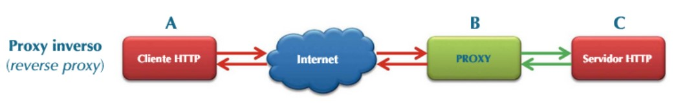

Tipos de Proxy
Análisis completo de los diferentes tipos de servidores proxy y sus aplicaciones
Clasificación por Función
1. Proxy Forward (Proxy Directo)
Actúa como intermediario para las solicitudes de clientes hacia Internet.
Cliente -> [Proxy Forward] -> Internet
Características:
- Caché de contenido web
- Filtrado de contenido
- Control de acceso
- Registro de actividad
Caso de Uso:
Entornos empresariales donde se necesita controlar y monitorear el acceso a Internet de los empleados.
2. Proxy Reverse (Proxy Inverso)
Actúa como intermediario para las solicitudes desde Internet hacia servidores internos.
Internet -> [Proxy Reverse] -> Servidores Internos
Características:
- Balanceo de carga
- Caché de contenido estático
- Terminación SSL
- Compresión de contenido
Caso de Uso:
Sitios web de alto tráfico que necesitan distribuir la carga entre múltiples servidores.

Clasificación por Nivel de Anonimato
1. Proxy Transparente
No modifica las solicitudes ni oculta información del cliente.
Características:
- Sin anonimato
- Caché de contenido
- Fácil implementación
2. Proxy Anónimo
Oculta la IP del cliente pero identifica que se está usando un proxy.
Características:
- Anonimato básico
- Modificación de headers HTTP
- Protección de privacidad moderada
3. Proxy Elite (Highly Anonymous)
Oculta completamente la información del cliente y el uso del proxy.
Características:
- Máximo anonimato
- Eliminación de headers identificativos
- Rotación de IPs
Clasificación por Protocolo
1. HTTP Proxy
Especializado en tráfico web HTTP/HTTPS.
Características:
- Caché web
- Filtrado de contenido
- Modificación de solicitudes
2. SOCKS Proxy
Proxy de bajo nivel que soporta cualquier tipo de tráfico.
Características:
- Versiones SOCKS4 y SOCKS5
- Soporte para múltiples protocolos
- Sin caché de contenido
3. FTP Proxy
Especializado en transferencia de archivos.
Características:
- Caché de archivos
- Control de transferencias
- Logging específico FTP
Comparativa de Tipos de Proxy
| Tipo de Proxy | Rendimiento | Seguridad | Anonimato | Complejidad |
|---|---|---|---|---|
| Forward Proxy | Alto | Medio | Variable | Media |
| Reverse Proxy | Muy Alto | Alto | N/A | Alta |
| Transparente | Muy Alto | Bajo | Ninguno | Baja |
| Elite | Medio | Muy Alto | Muy Alto | Muy Alta |
Consideraciones de Implementación
Selección del Tipo de Proxy
Factores a considerar:
- Objetivo principal (seguridad, rendimiento, anonimato)
- Tipo de tráfico a manejar
- Recursos disponibles
- Nivel de experiencia del equipo técnico
Mejores Prácticas
- Implementar monitoreo y logging
- Establecer políticas de uso claras
- Mantener actualizaciones regulares
- Realizar copias de seguridad de la configuración